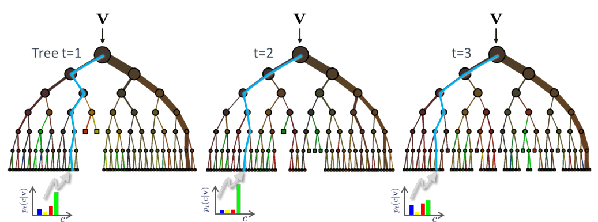
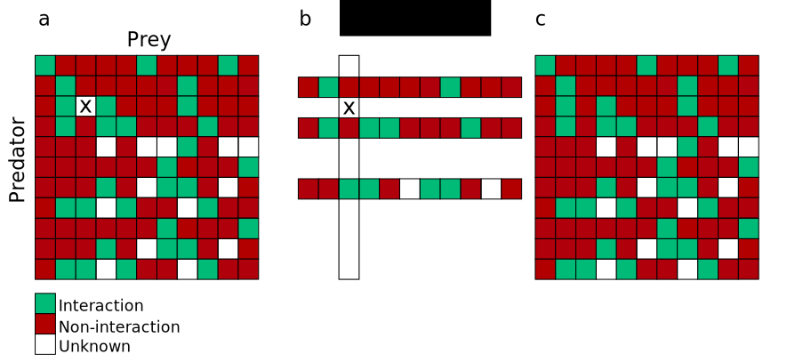
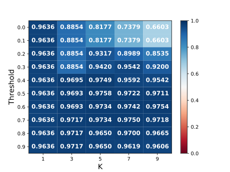
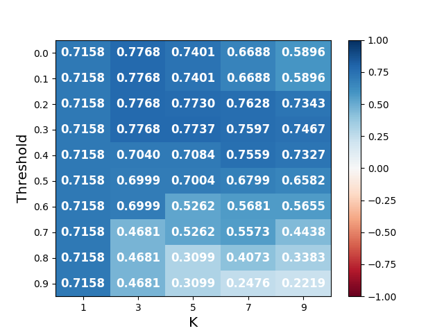

Automatic Revision of Ecological Theories
Motivation


[Supervised] learning in a nutshell

Random forests
The thesis' thesis
Biodiversity is shaped by too many factors (speciation, stochastic drift, selection from abiotic and biotic factors) to be understood with a single unifying theory.
Thus, we must combine traditional theories with techniques capable of learning from data, but we must be able to keep the structure and clarity of these traditional theories.

Lotka-Volterra framework
\[\frac{dx}{dt} = \alpha x - \beta xy \mbox{ and } \frac{dy}{dt} = \delta xy - \gamma y.\]Probabilistic niche model
\[ PPreyOn(x, y) = \alpha \times \exp\left[-\left(\frac{N(y) - D(x)}{R(x)/2}\right)^2\right].\]Exponential growth
From
\[N(x, t + 1) = G(x) \times N(x, t).\]To
\[SmallN(x, t) \mbox{ and } Resources(x, t) \Rightarrow N(x, t + 1) = G(x) \times N(x, t).\]Theory revision wishlist
Handling deterministic and probabilistic theories.
Fast algorithms for theory revision.
Handling arbitrarily large knowledge bases.
Ecological Interactions
Why interactions?
First reason: a key reason why selection is difficult to handle with traditional theories is because of the complexity of species interactions.
Second reason: my lab is studying interactions. I had access to both good data-sets and people who understood them well.

Data
- Assembled by Isabelle Daigle, mostly from Digel et al. (2014).
- 48 soil food webs.
- 881 species.
- 34 193 unique interactions.
- 215 418 absence of interactions.
- 3 real valued-traits: \(body mass\), \(Ph0\), \(Ph1\).
- 25 binary traits (e.g. AboveGround, Detritivore, Bacteria, Jumps, LongLegs, UsePoison).
K nearest neighbour (KNN) with K = 3
\begin{align} tanimoto(\mathbf{x}, \mathbf{y}) &= \frac{\left\vert\{A, B, C\} \cap \{A, C, D, E, F\}\right\vert}{\left\vert\{A, B, C\} \cup \{A, C, D, E, F\}\right\vert}\\ &= \frac{\left\vert\{A, C\}\right\vert}{\left\vert\{A, B, C, D, E, F\}\right\vert} = \frac{2}{6}. \end{align}
tp, tn, fp, fn are the true positives, true negatives, false positives, and false negaties, respectively.
The TSS ranges from -1 to 1.
Supervised learning Random forests predict correctly 99.55% of the non-interactions and 96.81% of the interactions, for a TSS of 0.96.
Removing the binary traits has little effect on the model. With only \(body mass\), \(Ph0\), \(Ph1\), the TSS of the random forest is 0.94.
KNN with Threshold
I Bartomeus' pollinator-plant data-set
- Plant-pollinator interactions were collected across 16 sites in the southwest of the iberian peninsula (Huelva and Seville).
- 65 pollinators.
- 277 plants.
- 739 pollinator-plant interactions.
- We randomly pick 739 pollinator-plant pairs that are not interacting to build a data-set of 1478 entries, half of interactions, half of non-interactions.
Accuracy
TSS
Markov Logic
Can answer queries of the form:
\[P(Cancer(Bob) | Smoking(Anna) \mbox{ and } Friends(Anna, Bob)).\] \[P(Friends(x, y) \Leftrightarrow Friends(y, x) | ...).\]
Salix data-set
 \[Parasites \rightarrow Galler \rightarrow Salix\]
\[Parasites \rightarrow Galler \rightarrow Salix\]
Learning weights (but not really rules)
\[HighNumSalix(x), 6.44.\] \[\neg ModerateCooccurrence(x,y), 5.60.\] \[\neg PreyOnAt(x,y,a3), 4.38.\] \[\neg HighCooccurrence(x,y), 4.33.\] \[\neg PresenceAt(x,y), 3.08.\] \[\neg PreyOn(x,y), 1.68.\] \[\neg IsSalix(x), 1.38.\] \[\neg IsGaller(x), 0.59.\] \[\neg CloselyRelated(x,y), 0.59.\] \[\neg HigherPhyloValue(x,y), 0.57.\]Fuzzy Logic
I Bartomeus' pollinator-plant data-set (part II)
Seven real-valued traits:
- Plant's nectar tube dimension.
- Plant's nectar tube depth.
- Plant's flower width.
- Pollinator's body size.
- Pollinator's tongue length.
- Pollinator generalism.
- \(K\) nearest neighbour ratio.
Structure
\[\mathbf{If} \mbox{ } antecedants \mbox{ } \mathbf{then} \mbox { } consequents.\] \[\mathbf{If} \mbox{ } antecedants \mbox{ } \mathbf{then} \mbox { } consequents.\] \[\mathbf{If} \mbox{ } antecedants \mbox{ } \mathbf{then} \mbox { } consequents.\] \[...\]\[\mathbf{If} \mbox{ } A_0 \mbox{ and } A_1 \mbox{ and } A_2 \mbox{ and } ... \mbox{ } \mathbf{then} \mbox { } C_0.\]
Initial model
- If KNN is high then interaction.
- If KNN is low then non-interaction.
Current approach for learning (Python script)
Evolution
- Start with the initial knowledge base with the two KNN rules.
- Randomly generate a rule, add it to the knowledge base.
- If the new knowledge base beats the old by 0.004 TSS, keep the rule.
- Repeat \(\phi\) times
Pseudo-ensemble approach
- Make \(n\) evolutions.
- Count the frequency of the rules in the evolutions
- Try to add the rule one by one from most frequent to least
- Keep if TSS improves by at least 0.004.
- If Plant nectar tube depth is average then interaction.
- If Pollinator body size is small then interaction.
- If KNN is high then interaction.
- If Pollinator is specialist and Plant nectar tube dim is small then interaction.
- If Plant flower width is average then interaction.
- If Plant flower width is small and Pollinator tongue length is small then interaction.
- If KNN is low then non-interaction.
Results on pollinator-plant data-set
| Model | TSS (10% testing data) |
|---|---|
| Support Vector Machine | 0.564 |
| Fuzzy (initial model with two KNN rules) | 0.689 |
| Decision tree | 0.723 |
| Random forests | 0.795 |
| Fuzzy (after theory revision) | 0.841 |
Conclusions
- KNN is an effective, widely applicable, and simple approach.
- KNN with threshold works well with TSS scores.
- Supervised learning algorithms (esp. random forests) can predict interactions with few real-valued traits.
- Fuzzy knowledge bases are both clear and accurate.
- Even a silly revision algorithm yields very good results for fuzzy logic.
- Knowledge representation in ecology is an interesting topic in itself.
- Markov logic has issues (computational, binary) but modern variants could be promising.
What's Next
Salix part II?
...also fuzzy logic meets salix
Genetic (or evolutionary) algorithms